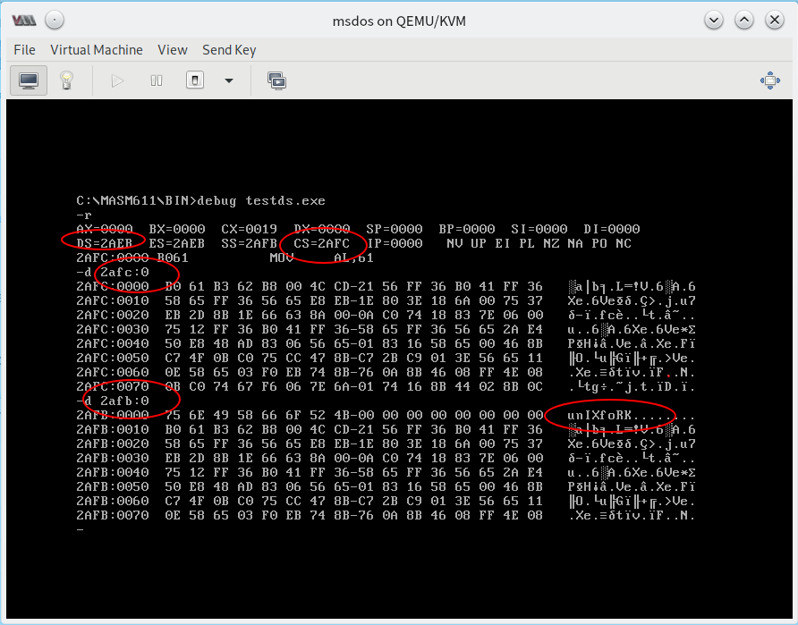

4.1 AND OR 与 字符串
AND 指令
和在高级语言当中一样，这条指令执行按位与逻辑运算。
mov al,01100011B
and al,00100011B
分析： 首先，我们将对应数据传送到 AL 寄存器中，之后将待运算数据与 AL 中的数据进行按位与运算，结果保存在 AL 寄存器中。
AND 指令
和在高级语言当中一样，这条指令执行按位或逻辑运算。
mov al,01100011B
or al,00100011B
分析： 首先，我们将对应数据传送到 AL 寄存器中，之后将待运算数据与 AL 中的数据进行按位或运算，结果保存在 AL 寄存器中。
我们可以使用这两条指令将某一位设为 1/0 或者用于检测某一位是否为 1/0 。
ASCII 码
ASCII 码表： https://www.asciitable.com/
如果我们要输入一个字母 a 然后让计算机显示在屏幕上，这个过程大致是怎么实现的呢？
按下 a 键之后，键盘发送信号到计算机，然后计算机对 a 键使用 ASCII 编码，以 61H 存储在内存的指定空间中，然后送入显存。工作在文本模式的显卡， 用 ASCII 解释显存中的 61H，然后显卡驱动显示器，将字母 a 的图画显示在屏幕上。
字符串
请使用 MASM 编译、连接下列代码并使用 DEBUG 进行调试，查看 data 段中的数据。
assume cs:code,ds:data
data segment
db 'unIX'
db 'foRK'
data ends
code segment
start: mov al,'a'
mov bx,'b'
mov ax,4c00h
int 21h
code ends
end start

字符串中字母的大小写转换问题
请观察 ASCII 码表中的大小写字母编码对应的二进制代码，容易发现：大小写字母的 ASCII 编码，除了第六位外，其他的都是一样的，第六位置置 0 其为大写，否则为小写。
利用我们前面提到的 OR AL,00100000B 可以将其变成小写字母，利用 AND AL,11011111B 可将其变为小写字母。